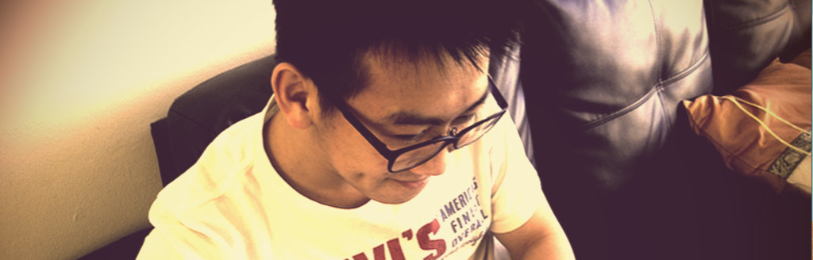

Interview with Moe Seth
iOS မြန်မာ keyboard developer မိုးစက်နှင့် အင်တာဗျူး

မင်္ဂလာပါ မိုးစက်ရေ ။ အခုလို အင်တာဗျူးခွင့်ပေးတဲ့ အတွက် ကျေးဇူးတင်ပါတယ်။ ပထမဆုံး မိုးစက် ကိုယ့်ဘာသာကိုယ် မိတ်ဆက်ပေးပါအုံး။
အားလုံးပဲ မင်္ဂလာပါ ခင်ဗျာ။ ကျွန်တော်လည်း အခုလိုဖြေကြားခွင့်ရတဲ့အတွက် ကျေးဇူးတင်ပါတယ် ။ ကျွန်တော့် အသက်၂၁ ရှိပါပြီ ။ ကျွန်တော်အသက့် ၁၇နှစ်ကစပြီး Objective-C ကို လေ့လာခဲ့ပါတယ်။ ကျွန်တော့် စစရေးတုန်းက Cydia Store မှာ စပြီးတော့ Apps တွေ စပြီးထုတ်ခဲ့ပါတယ်။ နောက်ပိုင်း ၁၈နှစ်လောက်မှာတော့ App Store မှာ စထုတ်ဖို့ Idea ရှာတဲ့အချိန်မှာ မြန်မာလိုရိုက်လို့ရတဲ့ App မရှိဘူးဆိုပြီးတော့ MMKeyboard ကိုထုတ်လိုက်ပါတယ်။ အဲတုန်းက အားလုံးက အားပေးကြတဲ့ အတွက် ကျေးဇူးတင်ပါတယ်။ ကို Saturn နှင့် ကိုထူးတေဇာ တို့ကိုလည်း Blogs တွေမှာ ကြေညာပေးတဲ့အတွက် အရမ်းကျေးဇူးတင်ပါတယ်။ ကျွန်တော် အခု Computer Science Degree ကို University of New South Wales, Sydney မှာတက်ရောက်နေပါတယ်။ အခုတော့ ကျွန်တော် မြန်မာနိုင်ငံက private projects တွေကို လက်ခံထားပြီး လုပ်ပေးနေပါတယ်။ အဲဒါအပြင် Robotic နှင့်ပတ်သတ်တာတွေလဲ တက္ကသိုလ်မှာ လုပ်နေပါတယ်။ နောက်ဆုံး App on App Store ကတော့ MMCurrency ပါ။
မိုးစက်ကို ကျွန်တော် ပထမဆုံး mmkeyboard ကို app store ပေါ်မှာ တင်ရောင်းတာကနေ စပြီး သိတာပါ။ ပထမဆုံး app ဖန်တီးခဲ့တဲ့ အတွေ့အကြုံ အခက်အခဲလေးတွေ ပြောပြပေးပါလား။
အဲတုန်းကတော့ မြန်မာပြည် developers တွေ ရှားပါးတဲ့အတွက် အခက်အခဲတွေ တွေ့ရင် မေးခွန်းတွေ မေးရတာ အရမ်းကို ခက်ခဲခဲ့ပါတယ်။ အခြားအခက်အခဲတွေ ဘာမှတော့မရှိပါဘူး။ signing certificate တွေကပြသနာ တော်တော်ပေးတယ် ။
wootylab ကနေ နောက်ပိုင်းမှာ app store app ထက် Cydia Tweaks တွေ Cydia Apps တွေ ထုတ်တာတွေ့ဖြစ်တယ်။ ဘာဖြစ်လို့ cydia app တွေဘက်မှာ ပိုပြီး အားသန်သွားခဲ့တာလဲ။
အဲလိုမဟုတ်ပါဘူး။ Cydia Store ကနောက် ဆုံး submit လုပ်တဲ့ apps တွေကိုအပေါ်မှာတင်ပေးတဲ့အတွက် exposure ပိုရတယ်။ ကျွန်တော် iOS private frameworks တွေကို reverse engineering လုပ်ပီထားတဲ့အတွက် apple store မှာလက်မခံတဲ့ tweaks တွေလုပ်လို့ရတယ်။ များသောအားဖြင့် ကျွန်တော့်သူငယ်ချင်းတွေ Defult iOS ရဲ့ behavior ကိုပြောင်းခိုင်းတဲ့ tweaks တွေကိုလုပ်တယ်။ Creating something hacky is always fun. :-)
Cydia App တွေကို ဖန်တီးရာမှာ App Store app တွေနဲ့ မတူတဲ့ အခက်အခဲလေးတွေ ရှိတာကို တွေ့ရတယ်။ အထူးသဖြင့် documentation ပေါ့။ တိတိကျကျ သေသေချာချာ ရေးထားတဲ့ documentation မတွေ့မိဘူး။ သို့ပေမယ့် cydia app တွေ cydia tweak တွေကတော့ အများကြီးပဲ။ ဒါကြောင့် ကျွန်တော် သိချင်တာက cydia app , cydia tweak တွေ လုပ်ဖို့ ဘယ်လိုလေ့လာခဲ့သလဲ။ ဟုတ်ပါတယ်။ လွန်ခဲတဲ့နှစ်တွေတုန်းကပိုဆိုးတယ်။ IRC channels က senior jailbreak developers တွေဆီကလေ့လာရတာ။ Documentation သိပ်မရှိသေးတဲ့အတွက် debugging ခက်ခက်ခဲခဲလုပ်ရတယ်။ အခုတော့ theos ဆိုတဲ development tools ရှိလာပြီ။ open-sourced project များလာပီဖြစ်တဲ့အတွက်လေ့လာရတာလွယ်သွားပြီ။ set up လုပ်ဖို့တော့ unix system and commands knowledge လိုပါတယ်။
မိုးစက် ဖန်တီးထားတဲ့ cydia tweak တွေထဲမှာ twikafly က တော်တော်လေး လူကြိုက်များတာတွေကို တွေ့ရပါတယ်။ Jailbreak ရ တုန်းက အဲဒီ အကြောင်းကို tweet ကျတာ နောက်ပြီး supporting တွေ မရတာတွေ မေးကျတာ တွေ့ရတယ်။ အဲဒီ tweak လေး အကြောင်း ပြောပြပါအုံး။
ဟုတ်ပါတယ်။ ပြဿနာ ကတော့ iOS firmware update ဖြစ်တိုင်း သူ့ရဲ့ private frameworks တွေကတော်တော်ပြောင်းသွားတယ်။ Twitkafly က private methods တွေကိုအများကြီးသုံးတဲ့အတွက် patches အသစ်တွေအများကြီးလိုတယ်။ တခြား tweaks တွေလဲအဲ့လိုပါပဲ။ tweaks တွေက firmware update လုပ်တိုင်း update လုပ်ပေးရတယ်။ Twitkafly က bitesms လိုပဲ users တွေကို tweet ဖို့နဲ့ reply to push notifications ကို springboard ရဲ ့နေရတို်င်းမှာလုပ်လို့ရအောင်လုပ်ပေးတယ်။ twitter အသုံးများတဲ့ လူတွေအတွက် အသုံး၀င်တယ်။
လက်ရှိ ဖန်တီးထားတဲ့ cydia app တွေ tweak တွေထဲမှာ ဘယ်ဟာကို သဘောအကျဆုံးလဲ။
TwitkaFly, NCQuickDismiss and InfiniteTweet ကတော့ ကျွန်တော်ဟာထဲက favorite ပါ။ Zephyr ကိုလဲကြိုက်ပါတယ်။
မြန်မာ keyboard ကို လည်း jailbreak အတွက် ရေးပေးခဲ့ပြီး free ပေးခဲ့တဲ့အတွက် ကျေးဇူးတင်ပါတယ်။ ပထမဆုံး မြန်မာ keyboard ဖန်တီးခဲ့တဲ့ အတွေ့အကြုံလေး ပြောပြပေးပါအုံး။
အဲဒါကတော့ Czech keyboard ကို method sizzling လုပ်ထားတာပါ။ အပြန်လုပ်ချင်လို့ Czech ကို Myanmar keyboard ကိုပြောင်းလိုက်တာ။ UIKit keyboard classes ကို reverse engineering လုပ်လိုက်တယ် အရင်ဆုံး မြန်မာတွေအသုံးနဲတဲ့ keyboard ကိုစဉ်းစားပီးတော့ Cechz ကိုရွေးလိုက်တာ။
မြန်မာ keyboard ကို open source ပေးဖို့ အစီအစဉ် ကော ရှိလား မသိဘူး။
Cydia mmkeyboard က github မှာရှိပါတယ်။ App Store mmkeyboard ကတော့ကျွန်တော် iOS မ develop တော့ဘူးဆို open source လုပ်မှာပါ။
အခုမှ စပြီး လေ့လာကာစ iOS App Developer တွေကို ကော ဘယ်လို အကြံပေးချင်လဲ။
Objective-C လေ့လာပါ။ Objective-C ကိုနားလည်ရင် iOS development က လွယ်သွားတယ်။ အဲ့ဒါရရင် iOS frameworks documentation တွေဖတ်ရင်ရပြီ။ github တို့ raywenderlich မှာ open-sourced projects တွေ study ပေါ့။
အခုလို အချိန်ပေးပြီး ဖြေကြားပေးတဲ့ မိုးစက် ကို ကျေးဇူးတင်ပါတယ်။